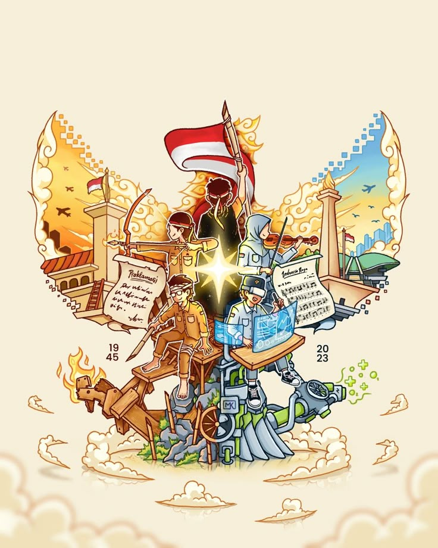

Pentingnya Toleransi di Indonesia
Penulis: Annabelle S2B
Indonesia, negara yang berlimpah dengan tradisi, kekayaan alam, dan adat istiadat. Indonesia adalah negara kepulauan dengan lebih dari 17.000 pulau dan berpenduduk lebih dari 270 juta orang (Sumber: international.stekom.ac.id) Hal itu menempatkan Indonesia sebagai negara terpadat keempat di dunia. Dari Sabang sampai Merauke angka-angka itu juga menunjukkan keragaman budaya, suku, agama, dan bahasa bangsa. Salah satu contohnya yaitu seperti Ngaben dari Bali, Debus dari Banten, Lompat Batu dari Nias dan lain lain.
Indonesia tidak hanya mempunyai tradisi dan adat yang beragam tetapi juga kekayaan alam yang tidak ada henti. Dimana air selalu segar, buah selalu manis dan pemandangan selalu indah. Indonesia adalah sebuah negara yang terbuat dari perbedaan ciri khas dan unik tetapi bersatu. Seperti tulisan yang terletak di kakinya Pancasila. ‘Bhineka Tunggal Ika’
Namun, dalam era modern yang sedang berkembang. Di mana teknologi adalah nomor satu di kehidupan masyarakat, banyak orang dipengaruhi oleh sosial media, permainan berbasis online, internet, dan lain lain. Menurut (Sumber: komdigi.go.id) pengguna internet di Indonesia sudah mencapai 221 juta, setara dengan 79,5 persen dari total populasi Indonesia. Indonesia merupakan salah satu negara dengan jumlah pengguna internet terbesar di dunia. Inilah mengapa lama kelamaan banyak orang tidak mengikuti sila-sila Pancasila, tidak mempunyai toleransi terhadap sesama.
Apa sih toleransi itu? Berdasarkan KBBI toleransi adalah sifat atau sikap toleran. Makna lain dari toleransi adalah sikap kita kepada orang lain yang mungkin kekurangan, beda agama, beda ras, dan lain lain. Tidak mengejek dan merendahkan seorang yang mempunyai agama atau budaya yang lain dengan kamu tetapi menerima perbedaan itu dengan tulus hati. Bersikap toleran tidak berarti kita harus setuju dengan pandangan orang lain tetapi kita harus bisa menghormati itu.
Toleransi adalah sikap yang kita sebagai penduduk Indonesia harus terapi dalam kehidupan sehari-hari. Tetapi mengapa sih toleransi itu penting? Toleransi adalah hal yang penting karena:
1. Mencegah Perpecahan
Toleransi adalah kunci untuk Indonesia yang damai, sejahtera dan maju karena ia meningkatkan persatuan dan kesatuan. Dengan persatuan dan kesatuan yang kuat, maka akan mencegah proses perpecahan masyarakat, bangsa, dan negara Indonesia.
2. Meningkatkan Iman
Di Indonesia tidak ada satu pun agama yang tidak mengajarkan toleransi kepada umatnya. Saya sebagai seorang Kristen protestan diajarkan toleransi terhadap sesama. Kita sebagai umat harus mengikuti dan ini bisa meningkatkan iman kita.
3. Meningkatkan Kerukunan
Sikap toleran membantu mendorong warga untuk lebih menghormati dan menghargai perbedaan. Ketika kita sudah terbiasa dengan pandangan, tradisi, agama dan adat mereka suasana akan lebih damai. Dengan sikap toleran warga bisa hidup berdampingan dengan harmonis, nyaman dan saling mendukung. Ini akan menimbulkan warga yang kuat dan kokoh.
Jadi jika toleransi itu penting bagaimana kita bisa menunjukkannya? Sebenarnya ada banyak cara kita bisa menunjukkan sikap toleran. Beberapa cara kita bisa menunjukkannya adalah:
1. Menghargai Keberagaman Budaya
2. Menjaga Keterbukaan Terhadap Pendapat Lain
3. Membantu Tetangga
4. Berpartisipasi dalam Proyek Sosial
5. Menghormati Sesama
Toleransi adalah sikap yang penting dan krusial di dalam kehidupan sehari-hari karena bisa meningkatkan kerukunan, mencegah perpecahan, meningkatkan iman dan lain lainnya. Bersikap toleran bukan berarti kita setuju dengan pandangan orang lain tetapi kita harus bisa menghormati itu. Kita boleh menggunakan gawai tetapi tidak boleh sampai lupa sikap kita dan kecanduan. Kita sebagai penduduk Indonesia wajib mempunyai sikap toleran. Inilah kunci untuk membuka pintu menuju Indonesia yang lebih maju, damai dan sejahtera.
"Perbedaan bukan alasan untuk berpisah, melainkan kesempatan untuk saling melengkapi."
DAFTAR PUSTAKA
https://international.stekom.ac.id/about-us/indonesia-sejarah-dan-geografishttps://www.komdigi.go.id/berita/artikel/detail/komitmen-pemerintah-melindungi-anak-di-ruang-digital https://www.desiringgod.org/interviews/should-christians-tolerate-false-religious-beliefs https://mediaindonesia.com/humaniora/718259/makna-dan-manfaat-toleransi-kunci-hidup-harmonis-di-tengah-keberagaman#goog_rewarded